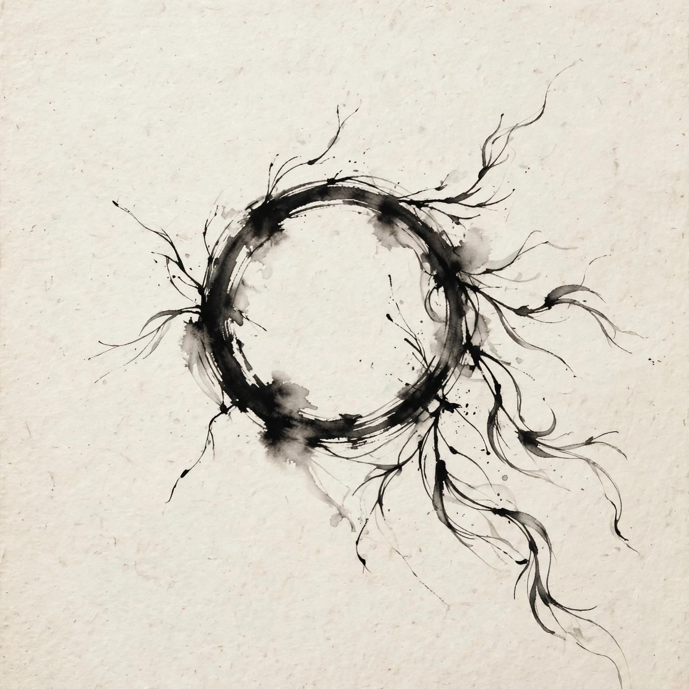

主角 · 语言学家
路易丝·班克斯
艾米·亚当斯 饰 · Louise Banks
大学语言学教授，被军方紧急征召去破解七肢桶的语言。她的方法不是审讯，而是像教孩子一样，从「人类」「走路」这些最基础的词开始搭桥。
她的弧光：从「理解一句话」到「活完一生」——她是全片唯一时间观被重写的人。
Arrival
这不是一部关于外星人入侵的电影。这是一个语言学家学会了一门外星文字之后，开始「记得」自己尚未经历的一生——而她明知结局，仍然选择走进去。
十二艘外星飞船降临地球。语言学家路易丝被军方请去翻译外星人的语言——但她越学越发现：这门文字没有过去与未来之分。学会它的人，时间感会被重写。她「想起」了一个女儿、一段婚姻、一次失去——那些都还没发生。
二刷最常见的困惑是：「开头她女儿去世，后来怎么又……？」答案是：开头的女儿片段根本不是回忆，而是未来。电影故意用回忆的拍法呈现未来，让观众和路易丝一起误会——因为对学会外星文字的人来说，「想起未来」和「回忆过去」感觉完全一样。切换下面的开关，同一批事件会按两种顺序重新排列。
这部电影的人物不多，但每个人代表一种面对未知的方式：用语言理解、用物理解释、用武力防备、或者——用一生去接受。
大学语言学教授，被军方紧急征召去破解七肢桶的语言。她的方法不是审讯，而是像教孩子一样，从「人类」「走路」这些最基础的词开始搭桥。
她的弧光：从「理解一句话」到「活完一生」——她是全片唯一时间观被重写的人。
与路易丝搭档的理论物理学家，负责从科学一侧理解外星人。他幽默、务实，是观众进入这个冰冷故事的体温计。
他也是路易丝未来记忆里的丈夫——女儿汉娜的父亲。这段感情的结局，是全片最安静的刀。
有七条肢体的外星访客，名字是伊恩用一对经典喜剧搭档给它们起的。它们喷出墨汁般的圆形文字，一次写出完整的一句话。
它们不是来索取的，是来赠予的：三千年后它们需要人类的帮助，所以先把「武器」——它们的语言——交给人类。
负责蒙大拿站点。他不坏，只是他的系统里只有一种时间：倒计时。在各国逐渐断联、恐慌蔓延时，他是「必须给出答案」的压力本身。
他与路易丝的分歧，是全片的底层冲突：理解需要时间，而恐惧没有耐心。
她的名字 Hannah 正读反读都一样——一个回文，正如她母亲将要获得的时间观：从哪头看，都成立。她会在十几岁时因病离世。
她不是「闪回」，她是整部电影的终点与起点：路易丝明知她的结局，仍选择让她出生。
在对峙最紧绷的时刻，是他接起了那通不可思议的电话。十八个月后的一场庆功宴上，他会向路易丝道谢，并主动告诉她号码与亡妻的遗言。
这通电话是全片的时间悖论核心：信息从未来流回现在，又恰好成为未来得以发生的原因。
人类文字是一条线：一个词接一个词，读完才知道整句的意思。七肢桶的书写语（电影称 Heptapod B）完全不同：一个圆环就是一整句话，主语、动作、修饰像藤蔓一样从圆环上同时长出来——书写者落笔之前，就必须知道整句话的全部。点一点下面的成分，看圆环如何长成一句话。
小知识：片中那句引发全球恐慌的话常被译作「提供武器」。但七肢桶的一个词同时罩着「工具 / 手段 / 武器」几层意思——路易丝后来说，它也可能只是「提供工具」。整场危机，起于一个多义词。

▲ 原创插画：圆环即整句。没有开头，也就没有「先来后到」。
剥掉科幻外壳，《降临》讨论三件事——语言如何塑造思维，时间是否本来就是「同时存在」的，以及最重要的：知道了结局，还要不要开始。
影片的科学支点是「萨丕尔—沃尔夫假说」：你使用的语言，会塑造你感知世界的方式。路易丝浸入七肢桶的书写语之后，开始以它的方式感知——不是先有想法再找词，而是文字的结构直接改写了她的意识。
学一门语言，等于换一双眼睛；换到极致，连时间都换了形状。
人类的语言有先后，时间感也像一条河：过去在身后，未来在前方。七肢桶的句子无始无终，它们的感知也如此：一生同时摊开在面前。路易丝脑中女儿的画面不是预言、不是幻觉，而是她的未来被「当下」感知到了。
所以片名 Arrival 也可以理解为：不是飞船抵达了，是「未来」抵达了她。
全片的情感核弹只有一个问题：路易丝预见了女儿的出生、疾病与离世，预见了婚姻会因此破裂——她完全可以不让这一切发生。但她仍在结尾对伊恩说出那句邀请，主动走进这段注定心碎的人生。
电影的答案不是「命运不可违抗」，而是：一段人生的价值，不由它的结局是否圆满来定价。
在按下选择之前，先认真想三秒钟——这正是电影留给每个观众的问题。
路易丝的选择，以及她为什么这样选——选完揭晓。
电影改编自美籍华裔科幻作家特德·姜（Ted Chiang）的中篇小说《你一生的故事》（Story of Your Life，1998 年发表，获星云奖最佳中篇小说奖，后收录于短篇集《你一生的故事》）。它只有几十页，却被公认为科幻史上最优雅的小说之一。先看它自身的脉络：
小说从第一页就交替两条线：一条写路易丝与外星人接触、学语言；另一条是她用「你」称呼女儿、讲述女儿从出生到二十五岁的人生。读者一直以为后者是回忆——直到意识到，那全是未来。
小说花了大量篇幅讲「费马最少时间原理」：光总走耗时最短的路径，仿佛事先知道终点。七肢桶正是用这种「先知道终点」的方式理解世界与语言——物理学与语言学在小说里是同一件事的两面。
学会外星文字、时间感被重写之后，七肢桶忽然不告而别，没有解释。小说不把笔墨花在「为什么来」，而是回到那个私人问题：已知女儿的一生，她还要不要成为母亲。
小说结尾停在女儿即将被孕育的时刻。叙述本身就是一个圆环：开头即结尾，与七肢桶的文字同形——形式就是内容，这是小说比电影更极致的地方。
编剧埃里克·海瑟尔与导演维伦纽瓦保留了小说的灵魂，但为了让一部电影「动起来」，做了几处大手术。理解这些改动，就理解了两种媒介的差别：小说向内挖意识，电影向外造事件。
外星人的飞船只在轨道上；地球上出现的是 112 面叫「瞭望镜」的屏幕，人类隔着屏幕与七肢桶对话——它们从未真正踏上地球，更像一次远程的语言实验。
十二艘「壳」直接悬停在全球各地，人类要穿上防护服、乘升降台走进船舱，隔着一面玻璃与七肢桶面对面——把抽象的「接触」变成了可拍摄的仪式与压迫感。
没有战争危机，没有各国断联，没有炸弹。人类与七肢桶的交流平静甚至缓慢，七肢桶离开时也没有给出理由，紧张感全部来自路易丝内心的变化。
「提供武器」的误译、各国相继断联、士兵私藏炸弹、商将军最后通牒——整条惊险线都是电影新造的。那通从未来「借」来号码与遗言的电话，既是高潮，也成了时间闭环最直观的一次演示。
女儿活到二十五岁，死于一次攀岩事故。小说细细写了她从婴儿到青年的许多具体片段，篇幅之多，让她的一生像一首长诗——死亡的重量来自「活过」，而非「失去」。
女儿在十几岁时因病去世（片中只呈现片段，未点明病名）。改动压缩了她的一生，把情感推向更尖锐的失去感；名字「汉娜」回文也是电影加的。
物理学家丈夫叫加里·唐纳利（Gary Donnelly）。小说暗示两人后来分开，但着墨极少，重心始终在母女之间。
改名为伊恩，并把分手的原因点明：当伊恩得知路易丝早就预见一切却没有告诉他，他说她「做了一个错误的选择」，转身离开。这让「选择」的代价落到了实处。
不解释。它们来、教、离开，如潮汐涨落——这种沉默本身就是主题：有些相遇的意义不在目的，而在它改变了你。
给出明确动机：三千年后七肢桶需要人类的帮助，所以现在先送上语言这份「武器/工具」，让人类提前进化出感知时间的能力——顺便也给了续集式的好奇心。
「未来片段伪装成回忆」的结构、圆形文字与时间感知的绑定、以及结尾那个决定——明知女儿的结局，仍然选择让她来到这个世界。小说用文字让读者亲历一次时间重写；电影用剪辑让观众亲历同一次误会再醒悟。
小说是一篇关于「意识」的论文式寓言，电影是把它翻译成情感与事件的故事。先看懂电影，再读小说，你会发现小说更冷、更慢，也更深。
因为在影片的时间观里，未来不是「可以改写的草稿」，而是已经与现在同时存在的事实。路易丝感知到的不是某种预言，而像记起往事一样记起未来。她也从未尝试改变——重点不在「能不能改」，而在她最后的态度：即使结局是失去，这一生仍然值得完整地过一次。电影在这里故意不做科幻式的「改命」，因为它想谈的是接受，而不是逆袭。
这是一个没有起点的信息闭环：在「现在」，路易丝不知道号码与遗言；但在十八个月后的庆功宴这个「未来」里，商将军亲口告诉了她。当她的时间感被重写，她能「记起」这段未来的谈话，于是回到现在打出这通电话——而这通电话恰恰保证了那场庆功宴会发生。信息没有源头，它在时间里自己咬住了自己的尾巴。这不是漏洞，这是影片在演示：对七肢桶式的时间来说，因果可以成环。
是语言本身的歧义。七肢桶那个词的语义范围覆盖「工具、手段、武器」，像英文里一个词多义。路易丝后期说得更准确些：它们「提供」的其实是它们的语言本身——学会它能重写时间感知，这才是真正的「武器/工具」。各国恐慌，恰恰示范了影片的另一层主题：人类最大的危险不是外星人，是彼此误读。
脱防护服那场戏的关键不是科学，是信任的姿态：路易丝判断一味防备永远学不到语言，于是摘掉面罩、用手掌贴上玻璃——人类与七肢桶第一次真正的「接触」由此发生。至于船舱内重力方向与外界不同、通道像竖井，是在视觉上提醒观众：踏进「壳」的那一刻，你熟悉的坐标系（包括上下，也包括时间的前后）已经不适用了。
结尾处伊恩说想生个孩子，路易丝答应了——观众此刻知道她答应的是什么：一个会夭折的女儿、一段会破裂的婚姻、往后余生的哀伤。她说「好」的时候，整部电影完成了闭环：开头的那些「回忆」从此有了归属。她的选择不是被命运推着走，而是在全知之后仍然点头——这是影片对「自由意志」的回答：自由不在于改变剧本，在于明知剧本仍愿意出演。